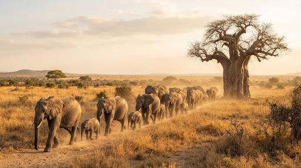

7 Days / 6 Nights
From TZS 10,184,000 / guest
Classic Wildlife Focus
The Great Northern Circuit Essential
The definitive first-timer immersion through Tarangire’s elephant corridors, Lake Manyara’s flamingo shallows, the Ngorongoro Caldera, and central Serengeti predator grounds.
pin_drop
Destinations: Tarangire, Manyara, Ngorongoro, Central Serengeti
group
Format: Small group (Max 6) or 100% Private (Window seat guaranteed)
record_voice_over
Naturalist: Senior KPSGA-certified English / French / German guide
fact_check
Inclusions: Park fees, custom 4x4 Cruiser, luxury lodges, AMREF insurance